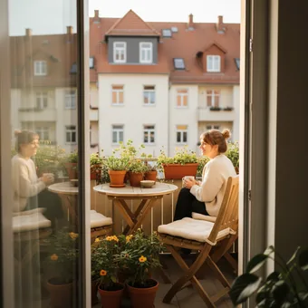

deutschoderwas · Sprechclub · Woche 6 · Strang A · Teil 1 · Montag, 19. Oktober
Wetter und Kleidung: Was ziehe ich heute an?
Über das Wetter zu reden ist in Deutschland kein leeres Gerede, sondern der Einstieg in fast jedes Gespräch. Und es hat eine praktische Seite: Wer morgens aus dem Fenster schaut, muss danach eine Entscheidung treffen. Heute lernst du beides — das Wetter beschreiben und sagen, was du deshalb anziehst.
Dein Niveau
Gleiches Thema, andere Sätze. Wechsle jederzeit — probier ruhig beide Seiten aus.
Der Blick aus dem Fenster
Jeder Morgen fängt mit derselben Frage an: Wie ist es draußen, und was heißt das für heute? Zwei Sätze, und du hast beides gesagt — „Es regnet und ist kalt. Ich nehme den Mantel.“ Genau diese Verbindung üben wir heute.
Wie ist das Wetter heute bei dir?
Was hast du heute Morgen angezogen?
Welche Jahreszeit magst du am liebsten?
Wie unterscheidet sich das Wetter hier von dem in deiner Heimat?
Hat sich dein Kleidungsstil geändert, seit du hier lebst?
Gibt es Wetter, bei dem du gar nicht vor die Tür gehst?
🔑 Die Formel für heute:Wetter nennen + Folge daraus.„Es ist windig, deshalb nehme ich die Mütze mit.“ Zwei Teile, verbunden mit deshalb — und schon ist aus einer Beobachtung ein richtiger Satz geworden.
Warum Wetter hier so oft Thema ist
Im Fahrstuhl, an der Kasse, beim Nachbarn im Treppenhaus: Das Wetter ist das sichere Thema, mit dem man ein Gespräch anfangen kann, ohne jemandem zu nahe zu treten. Wer zwei Sätze darüber sagen kann, kommt hier überall ins Gespräch.
Redest du mit Fremden über das Wetter?
Was sagt man bei euch, wenn man jemanden trifft?
Wo wartest du oft draußen?
Warum ist ausgerechnet das Wetter das sichere Thema?
Wann wird Small Talk über das Wetter unangenehm?
Was ist bei euch das Thema, mit dem man ein Gespräch anfängt?
💡 Drei Sätze, die immer gehen:„Ganz schön kalt heute.“ · „Endlich mal Sonne.“ · „Und morgen soll es wieder regnen.“ Alle drei kannst du an der Bushaltestelle sagen, ohne dass es aufdringlich wirkt — und meistens antwortet jemand.
Zwölf Wörter für draußen und für den Schrank
Sagt jedes Wort laut — mit Artikel. Und gleich einen Satz hinterher: Wann hast du dieses Wort zuletzt gebraucht?
das Wetter
„Das Wetter soll morgen besser werden.“
💡 Immer das und immer im Singular — die Wetter gibt es nicht. Und merk dir das kleine soll: Es soll regnen heißt „so ist die Vorhersage“, nicht dass jemand es befiehlt.
die Sonne
„Endlich scheint mal die Sonne.“
💡 Das Verb dazu ist scheinen: Die Sonne scheint. Und ganz häufig im Alltag: sonnig, die Sonnenbrille, in der Sonne sitzen.
die Jahreszeit
„Der Herbst ist meine liebste Jahreszeit.“
💡 Alle vier sind der: der Frühling, der Sommer, der Herbst, der Winter. Und mit im: im Sommer, im Winter — nur im Frühling heißt oft auch im Frühjahr.
frieren
„Ich friere, der Bus kommt einfach nicht.“
💡 Zwei Formen, beide richtig: Ich friere und Mir ist kalt. Die zweite hörst du öfter. Und für Hände und Füße: Mir sind die Füße kalt.
die Mütze
„Nimm die Mütze mit, es ist windig.“
💡 Dazu gehören der Schal und die Handschuhe — immer im Plural, man hat ja zwei. Der Satz, den hier jedes Kind hört: Zieh dir was an!
der Mantel
„Bei dem Wetter brauchst du einen Mantel.“
💡 Der Unterschied: die Jacke ist kürzer, der Mantel geht bis übers Knie. Und die Regenjacke ist die, die man hier am häufigsten braucht.
das Hemd
„Zum Termin ziehe ich ein Hemd an.“
💡 Nicht verwechseln: das Hemd hat Knöpfe, das T-Shirt nicht, die Bluse ist die Damenvariante. Und der Pullover kommt darüber.
der Ärmel
„Krempel dir die Ärmel hoch, es wird warm.“
💡 Die Wendung die Ärmel hochkrempeln heißt auch übertragen: anpacken, sich an die Arbeit machen. Jetzt krempeln wir die Ärmel hoch.
sich anziehen
„Zieh dir was Warmes an.“
💡 Drei Verben, die zusammengehören: anziehen (Kleidung anlegen), ausziehen (abnehmen), umziehen (andere Kleidung anlegen). Alle drei trennbar und alle drei mit sich.
sich umziehen
„Ich ziehe mich schnell um, dann können wir los.“
💡 Achtung, zwei Bedeutungen: sich umziehen = andere Kleidung anlegen. umziehen ohne sich = in eine andere Wohnung ziehen. Das kleine Wort entscheidet.
der Kleiderschrank
„Im Kleiderschrank hängt noch die Sommerkleidung.“
💡 Zweimal im Jahr hört man hier denselben Satz: „Ich muss den Schrank umräumen.“ Gemeint ist der Wechsel von Sommer- auf Winterkleidung.

draußen
„Wollen wir draußen sitzen? Es ist noch warm genug.“
💡 Merk dir das Paar: draußen (Wo?) und nach draußen (Wohin?). Ich sitze draußen — aber Ich gehe nach draußen. Genauso: drinnen und nach drinnen.
💡 Spiel „Was ziehst du an?“: Einer nennt ein Wetter — Regen, Schnee, dreißig Grad, Wind, Nebel. Der Nachbar sagt sofort einen Satz mit deshalb: „Es schneit, deshalb ziehe ich die dicken Schuhe an.“ Wer deshalb vergisst, gibt weiter.
Es regnet, es ist kalt, mir ist kalt — was denn nun?
Beim Wetter gibt es drei Satzmuster, und sie werden ständig verwechselt. Wenn du sie einmal auseinanderhältst, klingt jeder Wettersatz richtig.
🌧️
Es regnet.
ein eigenes Wetterverb, das immer es braucht
Es regnet seit heute Morgen.
🌡️
Es ist kalt.
das Wetter allgemein, für alle gleich
Draußen ist es richtig kalt.
🧣
Mir ist kalt.
dein Gefühl — du stehst im Dativ
Mir ist kalt, ich hole eine Jacke.
✅ So sagt man es
Es regnet schon den ganzen Tag.
Warum das stimmtWetterverben brauchen immer ein es: es regnet, es schneit, es blitzt. Das es ist kein richtiges Subjekt, aber es muss trotzdem dastehen.
❌ So nicht
Regnet schon den ganzen Tag.
Das ProblemOhne es fehlt dem Satz der Anfang. In vielen Sprachen geht das, im Deutschen nicht — das es ist Pflicht.
✅ So sagt man es
Mir ist kalt.
Warum das stimmtWenn du von deinem Gefühl sprichst, stehst du im Dativ: mir, dir, ihm. Genauso: Mir ist warm. Mir ist schlecht.
❌ So nicht
Ich bin kalt.
Das ProblemIch bin kalt heißt, dass du als Mensch kühl und abweisend bist — das sagt man über den Charakter, nicht über die Temperatur.
✅ So sagt man es
Zieh dir eine Jacke an.
Warum das stimmtsich anziehen braucht das dir, sobald das Kleidungsstück dabeisteht: Ich ziehe mir die Jacke an. Ohne Kleidungsstück reicht Ich ziehe mich an.
❌ So nicht
Zieh eine Jacke.
Das ProblemOhne an heißt ziehen nur „an etwas zerren“. Die Vorsilbe macht die ganze Bedeutung — und sie muss ans Satzende.
Eine Frage entscheidet: Geht es um draußen oder um dich?
Um das Wetter? → Es ist kalt. Draußen ist es kalt, überall gleich.
Um dein Gefühl? → Mir ist kalt. Neben dir kann jemandem warm sein.
Um eine Sache? → normal mit sein. Die Suppe ist kalt. Das Zimmer ist warm.
Nie:Ich bin kalt. Das ist ein Satz über deinen Charakter.
Ein Satz zum Auswendiglernen, in dem alle drei vorkommen: „Draußen ist es kalt, mir ist auch kalt, und der Kaffee ist inzwischen kalt.“
🎯 Zu zweit, eine Minute: Einer sagt ein Wetter, der andere baut sofort drei Sätze: einen mit es, einen mit mir, einen mit deshalb. Danach tauschen.
Vier Bausteine, und der Morgen ist beschrieben
Wetter nennen, Gefühl nennen, Folge nennen, Vorhersage nennen. Vier Handgriffe, mit denen du jeden Morgen in zwei Sätzen zusammenfassen kannst.
1 · 🌤️ Wetter nennen Es regnetEs ist windigDie Sonne scheintEs sind zehn Grad
So klingt esEs regnet und es sind nur zehn Grad.
2 · 🥶 Gefühl nennen Mir ist kaltMir ist zu warmIch friereDas ist mir zu viel
So klingt esMir ist kalt, ich brauche eine Jacke.
3 · 🧥 Folge nennen deshalb …also nehme ich …dann ziehe ich … anda brauche ich …
So klingt esEs ist windig, deshalb nehme ich die Mütze mit.
4 · 🔮 Vorhersage nennen Morgen soll es …Am Wochenende wird es …Es soll wärmer werdenAngeblich kommt Regen
So klingt esMorgen soll es wieder regnen.
1 · 🌤️ Wetter genauer Es nieselt nur leichtEs zieht ziemlichDer Himmel ist bedecktEs klart langsam auf
So klingt esEs nieselt nur leicht, aber es zieht ziemlich.
2 · 🧭 Sich entscheiden Ich nehme lieber … mit, für alle FälleZur Sicherheit …Falls es doch aufklart, …Damit bin ich für beides gerüstet
So klingt esIch nehme lieber den Schirm mit, für alle Fälle.
3 · 💬 Small Talk anfangen Ganz schön frisch heuteEndlich mal ein bisschen SonneUnd morgen soll es wieder …So ein Wetter im Oktober
So klingt esGanz schön frisch heute — und morgen soll es noch kälter werden.
4 · 🌍 Vergleichen Bei uns wäre das …Daran musste ich mich erst gewöhnenIm Vergleich zu … ist das hier …Was mir am meisten fehlt, ist …
So klingt esBei uns wäre das schon Winter — daran musste ich mich erst gewöhnen.
Verb das Kleidungsstück das Wetter Höflichkeit
📣 Sofort anwenden: Schau kurz aus dem Fenster und sag vier Sätze — Wetter, Gefühl, Folge, Vorhersage. Genau das erzählst du morgen früh jemandem an der Haltestelle.
Vier Situationen — zwei Runden
Runde 1: Lest den Dialog zu zweit laut. Runde 2: Klappt die Zeilen zu und spielt ihn frei — mit dem Wetter von heute.
Dialog 1 · „Morgens vor dem Schrank“
Ihr wollt gleich los. Einer steht vor dem Schrank und weiß nicht, was er anziehen soll.
A
Wie ist es denn draußen?
B
Elf Grad und windig. Es regnet gerade nicht, soll aber später.
🗣️ Zahl, dann Wind, dann die Vorhersage mit soll. Drei Angaben in zwei kurzen Sätzen.tippen = Hilfe zeigen
A
Reicht die dünne Jacke?
B
Ich würde den Mantel nehmen. Bei dem Wind ist die Jacke zu kalt.
🗣️ Ich würde … ist ein Rat, keine Anweisung. Und die Begründung gleich hinterher.tippen = Hilfe zeigen
A
Und Mütze?
B
Steck sie in die Tasche. Wenn es zieht, bist du froh.
🗣️ Ein Kompromiss statt eines Ja oder Nein — und es zieht für unangenehmen Durchzug.tippen = Hilfe zeigen
A
Gut, dann können wir.
B
Moment, ich ziehe mich noch schnell um.
🗣️ sich umziehen mit sich — die Kleidung wechseln, nicht die Wohnung.tippen = Hilfe zeigen
Dialog 2 · „Small Talk an der Haltestelle“
Ihr wartet beide auf denselben Bus. Ein Gespräch, das mit dem Wetter anfängt und woanders endet.
A
Ganz schön frisch heute.
B
Ja, und ich habe die Mütze zu Hause vergessen. Ich friere schon die ganze Zeit.
🗣️ Zustimmen und etwas Eigenes dazugeben — genau so wächst Small Talk. frieren statt ich bin kalt.tippen = Hilfe zeigen
A
Der Bus hat auch Verspätung.
B
Schon fünf Minuten. Morgen soll es immerhin trocken bleiben.
🗣️ immerhin für den kleinen Trost. Und wieder das soll für die Vorhersage.tippen = Hilfe zeigen
A
Na, hoffentlich. Ich muss nämlich den ganzen Tag draußen sein.
B
Was machen Sie denn?
🗣️ Und hier verlässt das Gespräch das Wetter. Genau dafür ist Small Talk da.tippen = Hilfe zeigen
A
Ich arbeite auf dem Bau. Bei Regen ist das kein Spaß.
B
Das glaube ich sofort. Ah, da kommt er.
🗣️ Kurz anerkennen und dann natürlich beenden — ein Bus ist ein guter Schlusspunkt.tippen = Hilfe zeigen
Dialog 3 · „Drinnen oder draußen?“
Ihr seid verabredet und müsst entscheiden, ob ihr draußen sitzt. Es ist der letzte warme Abend im Jahr.
A
Wollen wir draußen sitzen oder ist es dir zu kalt?
B
Draußen, unbedingt. Es sind noch achtzehn Grad, das ist im Oktober selten.
🗣️ draußen als Antwort auf Wo?. Und ein Grund, der die Entscheidung leicht macht.tippen = Hilfe zeigen
A
Aber später wird es schnell frisch.
B
Dann nehme ich den Schal mit. Nach drinnen können wir immer noch gehen.
🗣️ nach drinnen für die Bewegung — drinnen allein wäre Wo?.tippen = Hilfe zeigen
A
Sollen wir eine Decke mitnehmen?
B
Gute Idee. Dann halten wir es bestimmt bis zehn aus.
🗣️ aushalten — trennbar, und im Alltag sehr häufig: es aushalten, jemanden aushalten.tippen = Hilfe zeigen
A
Ich freue mich. Nächste Woche ist das vorbei.
B
Genau deshalb machen wir es heute.
🗣️ genau deshalb — die Folge, mit Nachdruck. Ein schöner Schlusssatz.tippen = Hilfe zeigen
Dialog 4 · „Der Schrankwechsel“
Zweimal im Jahr dasselbe: Die Sommersachen kommen weg, die Wintersachen kommen raus. Ihr macht es zusammen.
A
Können die kurzen Sachen weg?
B
Zwei T-Shirts lasse ich noch hängen. Man weiß ja nie.
🗣️ Man weiß ja nie — sehr deutscher Satz, immer passend, wenn man vorsichtig plant.tippen = Hilfe zeigen
A
Und der Mantel von letztem Jahr?
B
Der passt mir nicht mehr richtig. Ich probiere ihn nachher noch mal an.
🗣️ passen mit Dativ: Der Mantel passt mir. Und anprobieren — trennbar.tippen = Hilfe zeigen
A
Sonst geben wir ihn weg.
B
Ja, wegwerfen wäre schade. Der ist noch gut.
🗣️ weggeben und wegwerfen — zwei ganz verschiedene Dinge, beide trennbar.tippen = Hilfe zeigen
A
Und die Mützen? Wir haben ungefähr sechs.
B
Frag mich nicht. Jedes Jahr finde ich eine mehr.
🗣️ Frag mich nicht als lockere Ausweichantwort — sehr umgangssprachlich und sehr häufig.tippen = Hilfe zeigen
🎭 Und jetzt ihr: Spielt Dialog 2 mit dem Wetter von heute. Wer wartet, muss das Gespräch nach vier Sätzen vom Wetter weg auf ein anderes Thema bringen — genau das ist die Kunst beim Small Talk.
🧩 Warum, deshalb, weil: vom Wetter zur Entscheidung
Das Wetter allein ist nur eine Beobachtung. Erst die Verbindung macht daraus einen richtigen Satz — und dafür gibt es drei Wörter mit drei verschiedenen Satzbauten.
Es ist kalt und ich ziehe den Mantel an sind zwei Sätze. Verbunden werden sie mit deshalb, mit weil oder mit denn — und alle drei stellen das Verb woanders hin. Das ist der ganze grammatische Inhalt von heute, und er ist die Grundlage für alles, was du später begründen willst: eine Bitte, eine Absage, einen Vorschlag.
➡️deshalb = Verb sofort dahinterEs ist kalt, deshalb nehme ich den Mantel.
▾
⬅️weil = Verb ganz ans EndeIch nehme den Mantel, weil es kalt ist.
▾
🔗denn = alles bleibt normalIch nehme den Mantel, denn es ist kalt.
▾
🎯und alle drei sagen dasselbeWetter → Entscheidung.
GrundEs ist windig,
deshalb auf Platz einsdeshalb
Verb an zweiter Stellenehme
Restich die Mütze mit.
Dieselbe Aussage in drei Bauformen
Lies alle drei laut hintereinander. Der Inhalt bleibt gleich, nur das Verb wandert — und daran erkennt man, wer den Satzbau beherrscht.
➡️
deshalb
besetzt Platz eins, das Verb muss sofort folgen
Deshalb bleibe ich zu Hause.
⬅️
weil
leitet einen Nebensatz ein, Verb ganz hinten
…, weil es regnet.
🔗
denn
verbindet zwei ganz normale Hauptsätze
…, denn es regnet.
deshalb → Es regnet, deshalb bleibe ich zu Hause.weil → Ich bleibe zu Hause, weil es regnet.denn → Ich bleibe zu Hause, denn es regnet.darum, deswegen → dasselbe wie deshalbUnd umgestellt → Weil es regnet, bleibe ich zu Hause.
Die Wetterverben und ihr es
Eine kleine Gruppe von Verben, die kein richtiges Subjekt hat. Das es steht trotzdem — und es verschwindet nie.
🌧️
Das es bleibt immer
auch wenn es nichts bedeutet
Es regnet. Nicht: Regnet.
🔀
Aber es kann rutschen
wenn etwas anderes Platz eins besetzt
Heute regnet es den ganzen Tag.
🔮
soll heißt Vorhersage
nicht Pflicht, sondern was angekündigt ist
Morgen soll es kälter werden.
Es regnet. · Es hat geregnet.Es schneit. · Es hat geschneit.Es ist windig. · Es war windig.Es zieht. (unangenehmer Durchzug)Es soll morgen regnen. (Vorhersage)Aber umgestellt: Morgen soll es regnen.
🧱 Bau die Sätze selbst
Tippe die Teile in der richtigen Reihenfolge an. Nach deshalb kommt sofort das Verb, nach weil steht es ganz hinten.
📖 Und jetzt im Zusammenhang
Ein Oktobermorgen, an dem das Wetter dreimal die Meinung ändert. Wähle für jede Lücke das passende Wort.
Merk dir nicht die Bedeutung, sondern was mit dem Verb passiert:
weil schickt das Verb ans Ende. …, weil es kalt ist.
deshalb zieht das Verb nach vorn. Deshalb nehme ich den Mantel.
denn ändert gar nichts. …, denn es ist kalt. Deshalb ist es das einfachste.
Die Reihenfolge unterscheidet sich auch: Nach weil und denn kommt der Grund, nach deshalb kommt die Folge.
Wenn du im Gespräch unsicher bist, nimm denn. Es ist grammatisch das bequemste und klingt trotzdem völlig natürlich: Ich bleibe zu Hause, denn es regnet.
🎭 Drei Situationen zu zweit
Einer fragt, einer entscheidet. Danach tauschen — und beim zweiten Mal ohne Notizen.
1 · Der Ausflug am Wochenende
Ihr plant einen Ausflug. A hat die Wettervorhersage gesehen, B will unbedingt los. Ihr müsst euch einigen: fahren, verschieben oder anders planen — und jede Entscheidung begründen.
Es soll den ganzen Tag regnenDann nehmen wir Regenjacken mitIch habe keine Lust zu frierenWir könnten auch Sonntag fahren
Angeblich klart es am Nachmittag aufZur Sicherheit nehme ich beides mitBei dem Wetter lohnt sich das nichtDann verschieben wir es lieber
✅ Eine gute Runde enthältJede Entscheidung wurde begründet — mindestens dreimal kam weil, deshalb oder denn vor. Am Ende steht ein Plan, nicht nur eine Meinung.
2 · Zieh dir was an!
A ist Elternteil oder besorgte Freundin, B will genau das anziehen, was er will. A begründet, B widerspricht — und einer gibt am Ende nach.
Zieh dir was Warmes anEs sind nur acht GradMir ist nicht kaltNimm wenigstens die Mütze mit
Ich friere nun mal schneller als duIch stecke sie in die Tasche, das reichtWenn es zieht, wirst du dich ärgernAlso gut, du hast ja recht
✅ Eine gute Runde enthältBeide haben mit Gründen gearbeitet, nicht mit Lautstärke. Mir ist kalt kam mindestens einmal richtig vor — und Ich bin kalt kein einziges Mal.
3 · Small Talk, der weitergeht
Ihr wartet zusammen — an der Haltestelle, im Wartezimmer, im Fahrstuhl. Fangt mit dem Wetter an. Regel: Nach spätestens vier Sätzen muss das Gespräch bei einem anderen Thema sein.
Ganz schön kalt heuteEndlich mal SonneWarten Sie auch schon lange?Was machen Sie denn beruflich?
So ein Wetter im Oktober habe ich selten erlebtBei uns wäre das schon WinterSind Sie hier aus der Gegend?Das kenne ich, bei mir ist es genauso
✅ Eine gute Runde enthältDas Gespräch hat das Wetter verlassen und ist bei etwas anderem gelandet. Keiner hat den anderen ausgefragt — auf jede Frage kam auch etwas Eigenes zurück.
🎴 Sprechkarten
Zieh eine Karte und sprich mindestens vier Sätze am Stück.
Deine Aufgabe
Tippe auf den Knopf.
⏱️ Die 90-Sekunden-Challenge
Ein Wetter, anderthalb Minuten, freies Sprechen. Nicht die Vorhersage aufsagen — sondern erzählen, was dieses Wetter für deinen Tag bedeutet.
Dein Wort
das Wetter
1:30
Geh die vier Bausteine entlang, dann trägt dich die Zeit:
Wie ist es draußen? Es ist … Es sind … Grad.
Wie fühlt sich das an? Mir ist … / Ich friere …
Was heißt das für dich? Deshalb ziehe ich … an. / Deshalb bleibe ich …
Und morgen? Morgen soll es …
Und wenn dir das Wort fehlt: beschreib es. „So ein Regen, der nicht richtig Regen ist, nur ganz fein“ — das versteht jeder, und meistens sagt dir jemand das Wort Nieselregen.
⏱️ Spielregel: In jeder Runde müssen ein es-Satz (es regnet, es ist kalt), ein mir-Satz (mir ist kalt) und ein Grund mit weil, deshalb oder denn vorkommen. Der Partner hakt auf den Fingern ab.
✅ Sitzt es schon?
8 Fragen. Tippe auf deine Antwort — die Erklärung kommt sofort.
✍️ Lückentext
Wähle in jeder Lücke das passende Wort.
📣 Danach laut: Jeder nennt reihum ein Wetter. Der Nachbar sagt sofort einen Satz mit deshalb und einen mit weil — dieselbe Aussage, zwei Bauformen. Wer das Verb falsch stellt, sagt den Satz noch einmal.
📮 Deine Hausaufgabe bis Mittwoch
Vier kleine Aufgaben, zusammen etwa 25 Minuten. Am Mittwoch gehen wir Kleidung kaufen — die Wörter von heute brauchst du dort wieder.
💡 Warum das hilft:weil, deshalb und denn sind nicht nur Wetterwörter. Mit ihnen begründest du später eine Absage, eine Bitte beim Amt oder einen Vorschlag im Job. Das Wetter ist nur das harmloseste Übungsfeld dafür.
0 von 0 Aufgaben geschafft.
Dieselbe Aussage in drei Bauformen — achte auf das Verb:
weil: Ich nehme den Mantel, weil es kalt ist.
deshalb: Es ist kalt, deshalb nehme ich den Mantel.
denn: Ich nehme den Mantel, denn es ist kalt.
umgestellt: Weil es kalt ist, nehme ich den Mantel.
und mit einem anderen Grund: Ich bleibe zu Hause, weil es den ganzen Tag regnet.
Ein einziger Test: Wo steht das Verb? Ganz hinten → das war weil. Direkt nach dem ersten Wort → das war deshalb.
So kommt ein Small Talk vom Wetter weg:
Der Einstieg: etwas über das Wetter, das eine Meinung enthält — Ganz schön frisch für Oktober.
Die Brücke: etwas Eigenes dazugeben, nicht nur zustimmen — Ich habe die Mütze zu Hause vergessen.
Der Haken: ein Detail, das eine Frage erlaubt — Ich muss heute den ganzen Tag draußen sein.
Die Frage: offen und harmlos — Was machen Sie denn?
Und der Ausstieg: ein Grund von außen — der Bus kommt, man wird aufgerufen, die Tür geht auf.
Die Regel dahinter: Auf jede Frage gibst du auch etwas von dir preis. Wer nur fragt, verhört — wer nur erzählt, hält einen Vortrag.
📬 Abgabe: Schick deine drei Wettersprachnachrichten bis Dienstagabend. Ich höre vor allem auf die Verbstellung nach weil und deshalb — das ist die Stelle, an der es bei fast allen anfangs rutscht.
🔜 Am Mittwoch, Teil 2:Kleidung kaufen: Größe, Farbe, umtauschen. Anprobieren, nach einer anderen Größe fragen — und was du sagst, wenn es zu Hause doch nicht passt. Die höflichen Formen aus Woche 5 kommen dabei zurück.